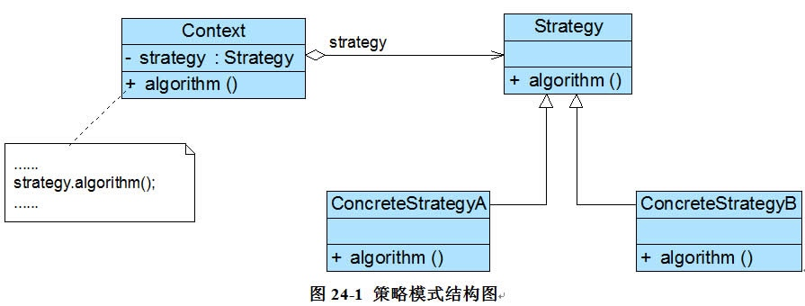

策略模式是指：定义一系列算法类，将每一个算法封装起来，并让他们可以互相替换，策略模式让算法独立于使用它的客户而变化，也被称之为政策模式(Policy)。是一种对象行为型模式。
详细说明
在策略模式中，我们可以定义一些独立的类来封装不同的算法，每一个类封装一种具体的算法，在这里，每一个封装算法的类我们都可以称之为一种策略(Strategy)，为了保证这些策略在使用时具有一致性，一般会提供一个抽象的策略类来做规则的定义，而每种算法则对应于一个具体策略类。
策略模式的主要目的是将算法的定义与使用分开，也就是将算法的行为和环境分开，将算法的定义放在专门的策略类中，每一个策略类封装了一种实现算法，使用算法的环境类针对抽象策略类进行编程，符合“依赖倒转原则”。在出现新的算法时，只需要增加一个新的实现了抽象策略类的具体策略类即可。
策略模式中的角色
在策略模式结构图中包含如下几个角色：
- Context（环境类）：环境类是使用算法的角色，它在解决某个问题（即实现某个方法）时可以采用多种策略。在环境类中维持一个对抽象策略类的引用实例，用于定义所采用的策略。
- Strategy（抽象策略类）：它为所支持的算法声明了抽象方法，是所有策略类的父类，它可以是抽象类或具体类，也可以是接口。环境类通过抽象策略类中声明的方法在运行时调用具体策略类中实现的算法。
ConcreteStrategy（具体策略类）：它实现了在抽象策略类中声明的算法，在运行时，具体策略类将覆盖在环境类中定义的抽象策略类对象，使用一种具体的算法实现某个业务处理。
策略模式结构图如下：

通用实现
在使用策略模式时，我们需要将算法从Context类中提取出来，首先应该创建一个策略接口，其典型代码如下所示：
public interface Strategy {
void algorithm();
}
然后再将封装每一种具体算法的类作为该策略类的实现类，如下代码所示：
public class ConcreteStrategyA implements Strategy {
public void algorithm() {
System.out.println("这是策略A");
}
}
public class ConcreteStrategyB implements Strategy {
public void algorithm() {
System.out.println("这是策略B");
}
}
于Context类而言，在它与抽象策略类之间建立一个关联关系，其典型代码如下所示：
/**
* 环境类，调用策略的实例
*
* @author zhanjingbo
*
*/
public class Context {
private Strategy strategy;
public Context(Strategy strategy) {
this.strategy = strategy;
}
/**
* 策略调用
*/
public void algorihm() {
this.strategy.algorithm();
}
/**
* 动态设置策略
*
* @param strategy
*/
public void setStrategy(Strategy strategy) {
this.strategy = strategy;
}
}
在客户端代码中只需注入一个具体策略对象，可以将具体策略类类名存储在配置文件中，通过反射来动态创建具体策略对象，从而使得用户可以灵活地更换具体策略类，增加新的具体策略类也很方便。策略模式提供了一种可插入式(Pluggable)算法的实现方案。
总结
策略模式用于算法的自由切换和扩展，它是应用较为广泛的设计模式之一。策略模式对应于解决某一问题的一个算法族，允许用户从该算法族中任选一个算法来解决某一问题，同时可以方便地更换算法或者增加新的算法。只要涉及到算法的封装、复用和切换都可以考虑使用策略模式。
主要优点
策略模式的主要优点如下：
- 策略模式提供了对“开闭原则”的完美支持，用户可以在不修改原有系统的基础上选择算法或行为，也可以灵活地增加新的算法或行为。
- 策略模式提供了管理相关的算法族的办法。策略类的等级结构定义了一个算法或行为族，恰当使用继承可以把公共的代码移到抽象策略类中，从而避免重复的代码。
- 策略模式提供了一种可以替换继承关系的办法。如果不使用策略模式，那么使用算法的环境类就可能会有一些子类，每一个子类提供一种不同的算法。但是，这样一来算法的使用就和算法本身混在一起，不符合“单一职责原则”，决定使用哪一种算法的逻辑和该算法本身混合在一起，从而不可能再独立演化；而且使用继承无法实现算法或行为在程序运行时的动态切换。
- 使用策略模式可以避免多重条件选择语句。多重条件选择语句不易维护，它把采取哪一种算法或行为的逻辑与算法或行为本身的实现逻辑混合在一起，将它们全部硬编码(Hard Coding)在一个庞大的多重条件选择语句中，比直接继承环境类的办法还要原始和落后。
- 策略模式提供了一种算法的复用机制，由于将算法单独提取出来封装在策略类中，因此不同的环境类可以方便地复用这些策略类。
主要缺点
策略模式的主要缺点如下：
- 客户端必须知道所有的策略类，并自行决定使用哪一个策略类。这就意味着客户端必须理解这些算法的区别，以便适时选择恰当的算法。换言之，策略模式只适用于客户端知道所有的算法或行为的情况。
- 策略模式将造成系统产生很多具体策略类，任何细小的变化都将导致系统要增加一个新的具体策略类。
- 无法同时在客户端使用多个策略类，也就是说，在使用策略模式时，客户端每次只能使用一个策略类，不支持使用一个策略类完成部分功能后再使用另一个策略类来完成剩余功能的情况。
适用场景
在以下情况下可以考虑使用策略模式：
- 一个系统需要动态地在几种算法中选择一种，那么可以将这些算法封装到一个个的具体算法类中，而这些具体算法类都是一个抽象算法类的子类。换言之，这些具体算法类均有统一的接口，根据“里氏代换原则”和面向对象的多态性，客户端可以选择使用任何一个具体算法类，并只需要维持一个数据类型是抽象算法类的对象。
- 一个对象有很多的行为，如果不用恰当的模式，这些行为就只好使用多重条件选择语句来实现。此时，使用策略模式，把这些行为转移到相应的具体策略类里面，就可以避免使用难以维护的多重条件选择语句。
- 不希望客户端知道复杂的、与算法相关的数据结构，在具体策略类中封装算法与相关的数据结构，可以提高算法的保密性与安全性。
练习
某软件公司欲开发一款飞机模拟系统，该系统主要模拟不同种类飞机的飞行特征与起飞特征，需要模拟的飞机种类及其特征如下表所示：
| 飞机种类 | 起飞特征 | 飞行特征 |
|---|---|---|
| 直升机(Helicopter) | 垂直起飞(VerticalTakeOff) | 亚音速飞行(SubSonicFly) |
| 客机(AirPlane) | 长距离起飞(LongDistanceTakeOff) | 亚音速飞行(SubSonicFly) |
| 歼击机(Fighter) | 长距离起飞(LongDistanceTakeOff) | 超音速飞行(SuperSonicFly) |
| 鹞式战斗机(Harrier) | 垂直起飞(VerticalTakeOff) | 超音速飞行(SuperSonicFly) |
请使用策略模式完成上述问题的设计。